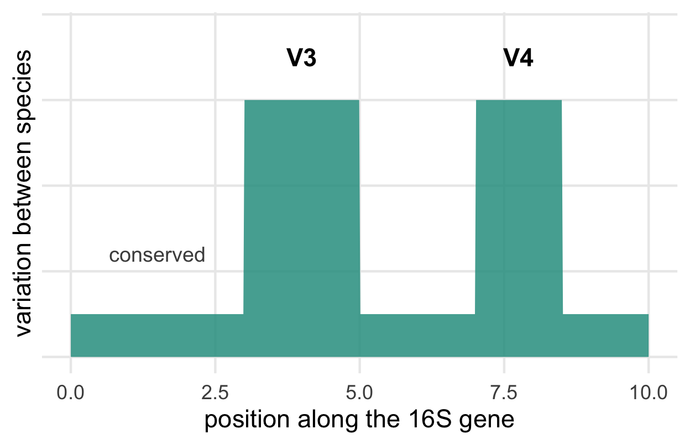
Workshop 2, Module 1
We won’t run any software today.
By the end of the afternoon you should be able to explain, in your own words, where each number in a count table came from.
@A00984:412:HTKJ7DSXX:1:1101:2645:1000 1:N:0:ACTGAGCG
TACGTAGGGTGCGAGCGTTGTCCGGATTTATTGGGCGTAAAGCGCGCGCAGGCGGTTTGTT
+
FFFFFFFFFFFFFFFF:FFFFFFFFFFFFFFFFFFFFF,FFFFFFFFFFFFFFFFFF,FFFEach sample produces millions of these records: a read name, the sequence, and a quality score for every base.
All the processing after this tries to answer what was in the tube, and how much of it?
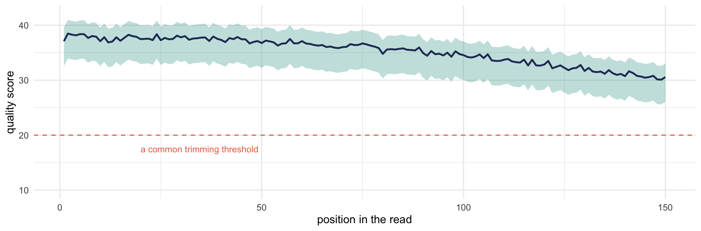
Quality drops toward the end of each read. Before any counting, someone trimmed off the low-quality ends.
By the time you receive a count table, someone has chosen:
You won’t find these choices in the table, but each one changed its numbers, so ask who made them.
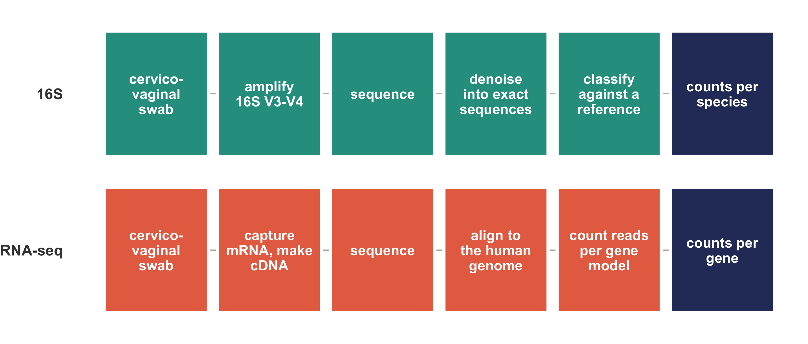
The lab work and the software differ at every step. Both end with features in rows, samples in columns, and read counts in the cells.
The 16S ribosomal RNA gene is in every bacterium, and parts of it differ between species.

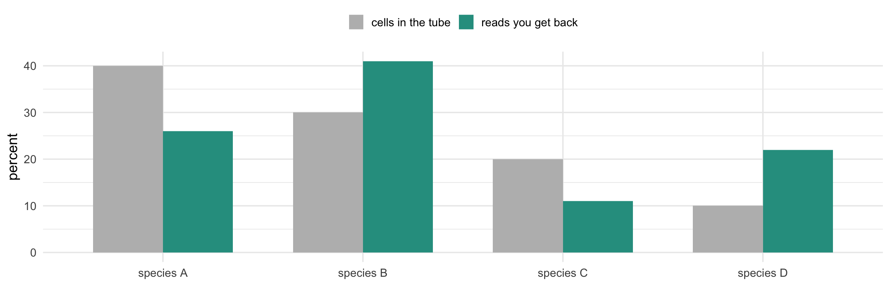
Primers bind some templates better than others, and 16S copy number varies between species, so the most common species in the reads may not be the most common in the tube.
If two reads differ by one base, did they come from one organism or two?
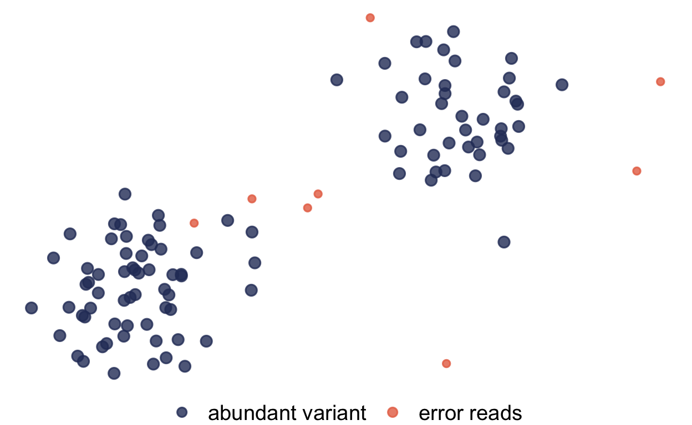
The sequenced region is short, and some species are identical across it.
| what the classifier can say | how our table names it |
|---|---|
| Lactobacillus crispatus | lactobacillus_crispatus |
| Gardnerella, but which species is ambiguous | gardnerella_swidsinskii_leopoldii |
| family only | prevotella_sp_1 |
| bacteria | dropped |
Two of our 220 row names admit this uncertainty in the name itself, so read the row names before you interpret them.
A cell in the species table is the number of amplicon reads in this sample that matched this species.
It is not the number of bacteria. The count also depends on
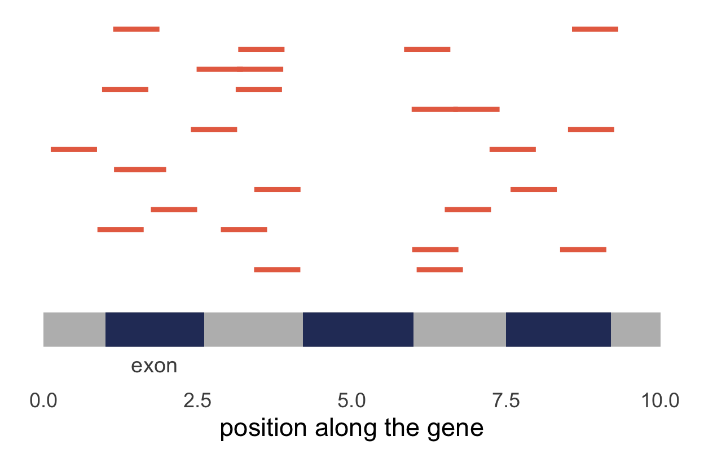
A cell in the gene table is the number of fragments in this sample assigned to this gene.
It is not the number of mRNA molecules either. The count also depends on
A cervicovaginal swab contains human cells and bacteria together.
Because they share a swab, we can pair the two tables sample by sample.
| table | row | P001_week_18 | P001_week_24 | P002_week_18 |
|---|---|---|---|---|
| 16S | lactobacillus_jensenii | 18,362 | 9 | 0 |
| gardnerella_swidsinskii_leopoldii | 193 | 17,977 | 42 | |
| fannyhessea_vaginae | 0 | 7,050 | 0 | |
| lactobacillus_iners | 2,956 | 2,301 | 460 | |
| … 216 more species | ||||
| RNA-seq | HBB | 1,692,453 | 945,462 | 1,905,792 |
| MUC5B | 114,446 | 1,116,191 | 966,436 | |
| HBA2 | 707,226 | 429,587 | 873,145 | |
| HBA1 | 341,042 | 201,850 | 629,533 | |
| … 14,222 more genes |
The rows with the most reads, in the first three columns of each table. Every sample ID is a column in both tables, so any sample can be looked up in both.
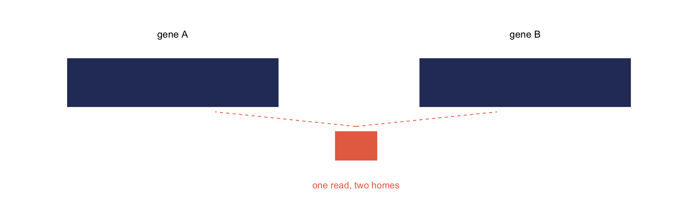
Gene families and repeated sequences produce reads that match several genes equally well. Counting such a read once, twice, or not at all gives a different table each time.
You will see expression reported as TPM, FPKM or RPKM. Those divide by gene length so you can compare genes within a sample.
Those tests need raw counts, because they model counting noise. Hand them normalised values and they will believe the noise is smaller than it is.
| sample | library size | reads for gene X | reads per million | range if sequenced again |
|---|---|---|---|---|
| sample 1 | 2,000,000 | 10 | 5 | 2.0 to 8.5 |
| sample 2 | 20,000,000 | 100 | 5 | 4.0 to 6.0 |
The normalised values match. Only the raw counts show that sample 1 rests on ten reads.
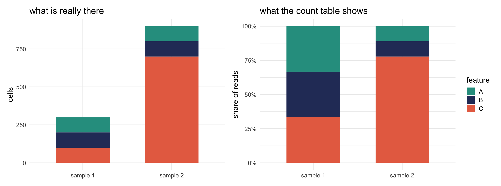
A and B have 100 cells in both samples, but their share of the reads falls from a third to a ninth.
“Relative abundance went down” and “there was less of it” are different claims. Without a spike-in or an absolute measurement, you cannot tell them apart.
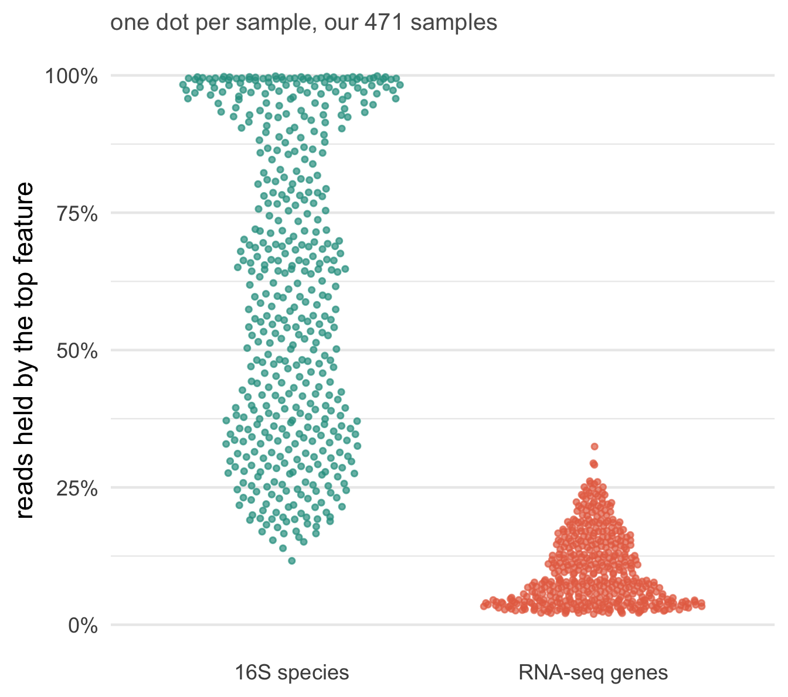
The controls are how you catch contamination, and few people ask for them.
| problem | how you notice |
|---|---|
| contamination from reagents | the same taxa in your negative controls |
| low-biomass samples | tiny library sizes, odd composition |
| index hopping between samples | a trace of everything in everything |
| a batch effect | samples cluster by run, not by biology |
You can only see three of these four if somebody recorded the metadata.
A count measures how much of something was in the tube relative to everything else in that tube, multiplied by how hard we looked.
Tomorrow morning covers the first two, on both tables at once, and tomorrow afternoon the third. The fourth waits until Wednesday.
The gene table was produced in two sequencing batches, and we kept that label in the metadata.
Tomorrow afternoon you will measure how much of the table the batch explains, and the answer is uncomfortable.
Keep every technical label your sequencing facility gives you. A batch effect you never recorded is one you cannot test for.
Put the laptops away.
For the next ninety minutes we build count tables by hand.
| study | the bag | a ball |
|---|---|---|
| 16S | a vaginal community | a 16S read |
| RNA-seq | the cells on a cytobrush | a cDNA fragment |
| bird survey | a patch of forest | a bird you saw |
Two people per bag, without looking:
Did the two people at the same bag make the same card?
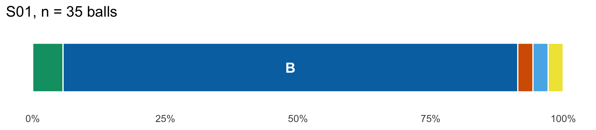
The front shows proportions, so every bar is the same length. The small n says how many balls were drawn. The back has the counts and one piece of sample information.
Find the one card most like yours and stand together. Judge by the bars and ignore the card numbers.
Now each pair finds its closest pair.
Now each group of four finds its closest group. Watch the board.
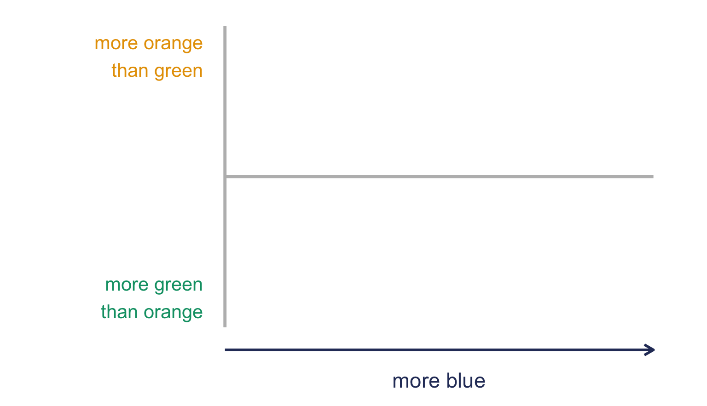
Stand where your card belongs. Left to right: how much of your bar is blue. Back to front: orange share minus green share.
The next slides show which bag every card came from.
If you are reading these slides before Monday afternoon, stop here.
| bag | cards |
|---|---|
| orange | S04 S10 S13 S16 S24 S29 S32 S37 S41 S50 S55 S59 S63 S65 S73 S79 |
| green | S03 S07 S11 S19 S22 S30 S33 S40 S42 S45 S51 S58 S64 S69 S74 S76 |
| blue | S01 S08 S15 S18 S23 S28 S35 S38 S44 S49 S53 S57 S61 S67 S72 S77 |
| diverse | S05 S06 S12 S17 S21 S27 S34 S36 S43 S47 S54 S60 S62 S70 S71 S78 |
| green~blue | S09 S20 S26 S31 S46 S56 S68 S80 |
| orange~green | S02 S25 S52 S66 |
| blue~diverse | S14 S39 S48 S75 |
A ~ is a blend: a community caught partway between two bags.
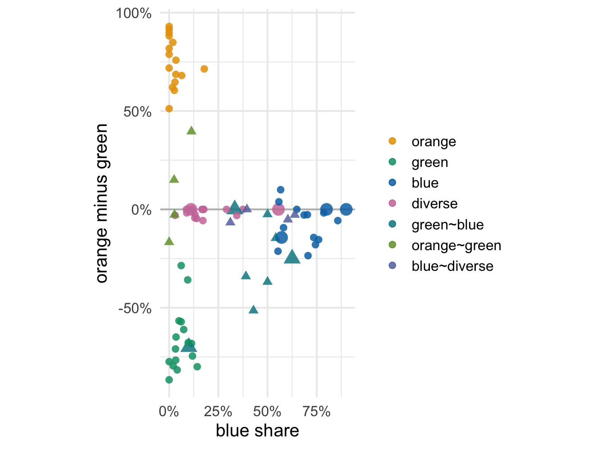
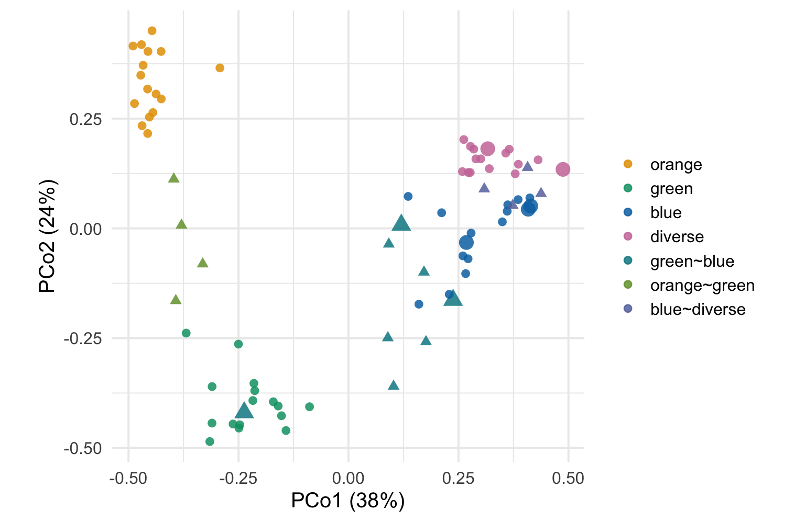
Bray-Curtis PCoA of all 80 cards. Big points are the cards with 5 to 10 balls.
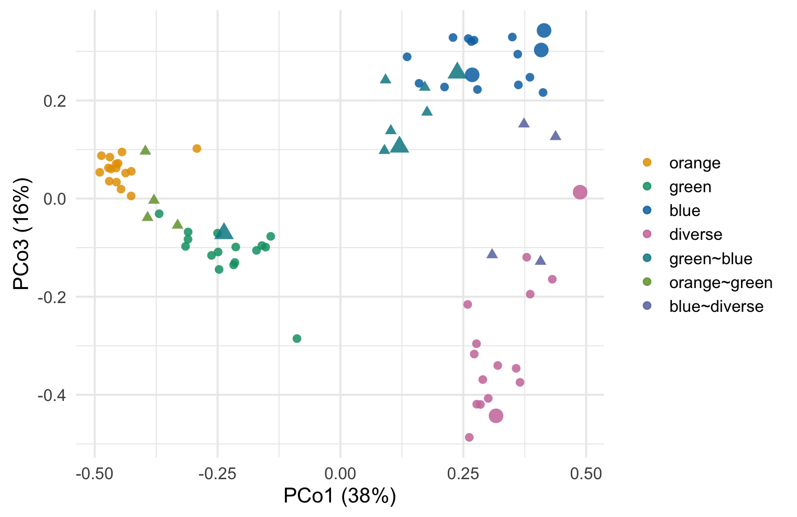
On the floor, blue and pink cards crowded together. A third axis pulls them apart.
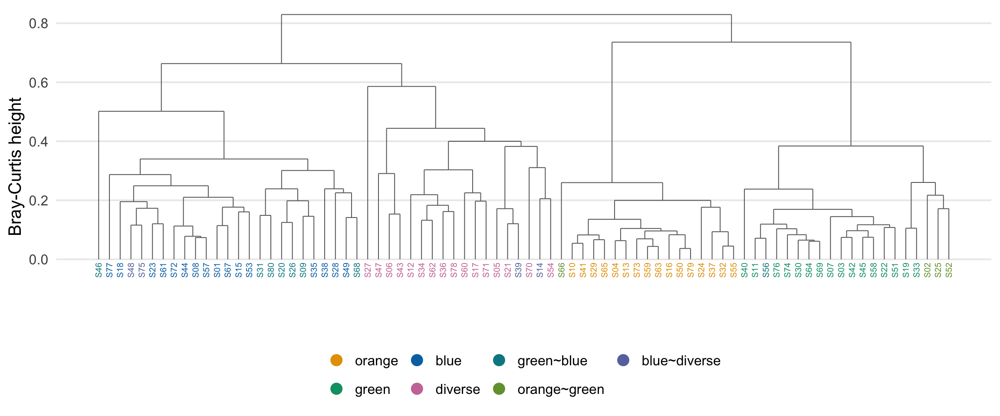
Average-linkage clustering: join the two closest, then the two closest groups.
Sit down with the people near you. One worksheet each.
Copy your table’s cards into the columns, one card per column.
Copy your two-by-two table onto the flip chart, with your n.
| table | n | mostly lactic acid, high | mostly lactic acid, low | not, high | not, low |
|---|---|---|---|---|---|
| 1 | |||||
| 2 | |||||
| … | |||||
| room |
Does your table agree with the room? Who is right?
The same table, with 220 rows of bacteria or 14,226 rows of human genes, and 471 columns.
The column totals and proportions from your worksheet are the first things you compute in R.